spatialcompare: Ordered Tableau and Comparison of Simple Featuresvignettes/spatialcompare.Rmd
spatialcompare.RmdThis package designed to facilitate the construction of infographics which place spatial features side-by-side, for example to compare visually the dimensions of cities, study regions or building sizes in two dimensional space. The package aims to preserve the accurate spatial dimensions of the features but translate their spatial position so that they are distributed visually. Because spatial dimensions are preserved, further spatial analysis (e.g. area calculations) or the additional of scale bars can be accurately plotted.
Functions rely on sf objects as inputs and outputs, hence the primary dependency of this package is sf. Use of sf objects provides maximum flexibility for the graphics output by leveraging base graphics or packages such as ggplot according to need or preference.
For real world publication quality graphics, it is likely that the outputs will need to be visually tweaked or adjusted.
The package should first be installed using the usual paths (install.packages) from GitHub or elsewhere; the package can then be loaded using (library(spatialcompare)). Note that spatialcompare relies on the sf package, which in turn has dependencies on the GDAL libraries. Depending on the platform, you may need to install these libraries externally to R.
library(spatialcompare)For this vignette, the a data example from the sf package will be used to demonstrate the functions of spatialcompare. This includes polygons of districts from North Carolina, and data with Sudden Infant Death Syndrome (SIDS) statistics for those counties (see sf documentation for more details, especially: https://r-spatial.github.io/spdep/articles/sids ). Here the original data is plotted as latitude/longitude format.
library(sf)
#> Linking to GEOS 3.6.1, GDAL 2.1.3, PROJ 4.9.3
nc_original <- sf::st_read(system.file("shape/nc.shp", package="sf"))
#> Reading layer `nc' from data source `/Library/Frameworks/R.framework/Versions/3.5/Resources/library/sf/shape/nc.shp' using driver `ESRI Shapefile'
#> Simple feature collection with 100 features and 14 fields
#> geometry type: MULTIPOLYGON
#> dimension: XY
#> bbox: xmin: -84.32385 ymin: 33.88199 xmax: -75.45698 ymax: 36.58965
#> epsg (SRID): 4267
#> proj4string: +proj=longlat +datum=NAD27 +no_defs
plot(nc_original,axes=T)
#> Warning: plotting the first 9 out of 14 attributes; use max.plot = 14 to
#> plot all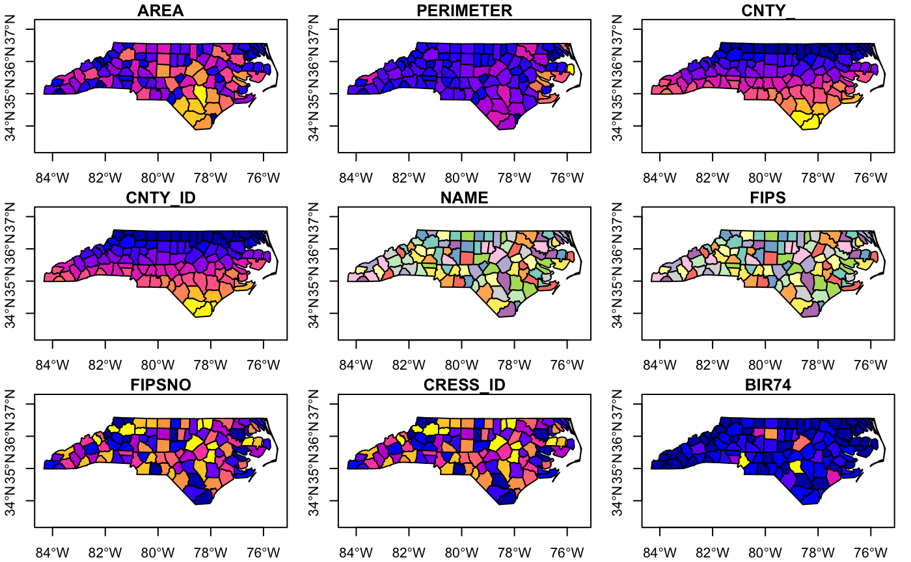
The nc data-set has lots of fields, but for simplifying the visualisations below, we’ll just select one parameter (AREA), which is parameter [1].
nc <- nc_original[1]
plot(nc,axes=T)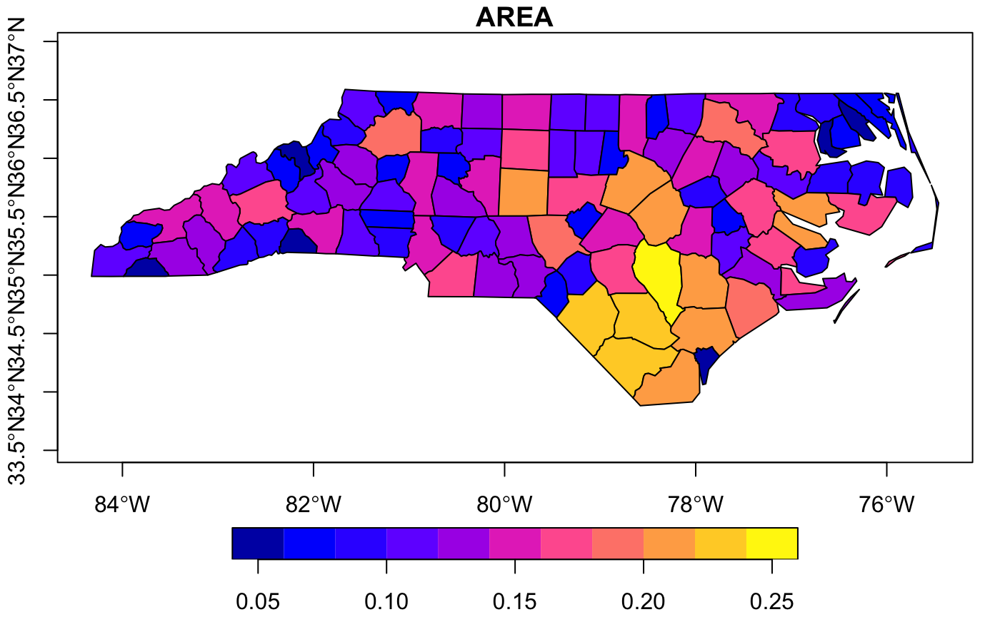
We are going to compare the different dimensions of the North Carolina counties side-by-side. The first step is to align the sf features (in this case the county shapes) around a central point of the feature (often a centroid) to 0,0 using the unified coordinate system.
For this we use the align function. In some instances we might want to transform multiple features around a single centroid for the entire collection of features.
nc_aligned_combined <- align(nc,by.feature=F)
#> Warning in align(nc, by.feature = F): Supplied sf object uses lat/long
#> values, hence converted to Mercator; centroids may not be satisfactory
plot(nc_aligned_combined,axes=T)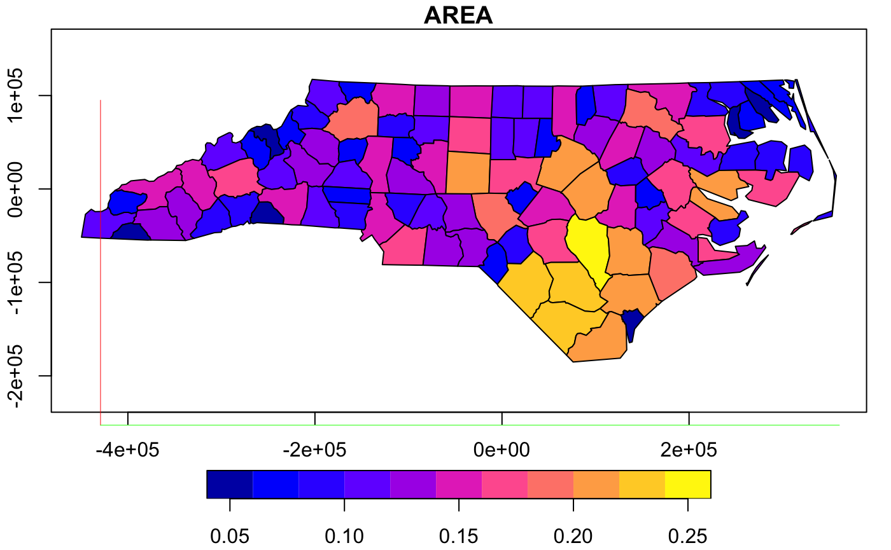
However, since we are specifically interested in comparing the county shapes and sizes, we would like to transform each county individually, so set by.feature to TRUE (teh default). Here you can see that all of the counties are now overlapping around 0,0.
nc_aligned <- align(nc,by.feature=T)
#> Warning in align(nc, by.feature = T): Supplied sf object uses lat/long
#> values, hence converted to Mercator; centroids may not be satisfactory
plot(nc_aligned,axes=T)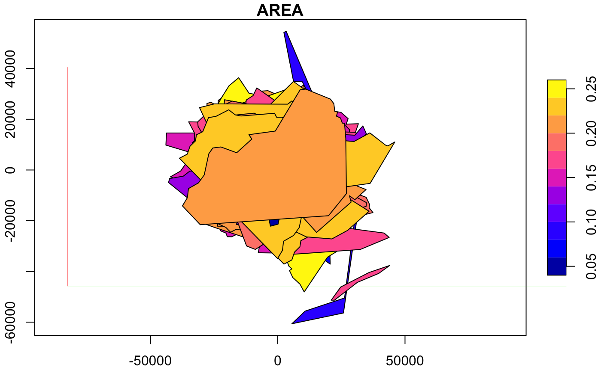
regulargrid methodThe next step is to re-distribute the features across space so that they can be compared visually. The distribute function calculates where each feature should be located on the comparative graph.
Currently only one method of distribution is available, a regular grid (regulargrid) based on the maximal bounding box of all features to calculate grid size. This is the default type of distribution algorithm.
par(mar=c(0,0,0,0))
plot(distribute(nc_aligned),col=nc_aligned$AREA)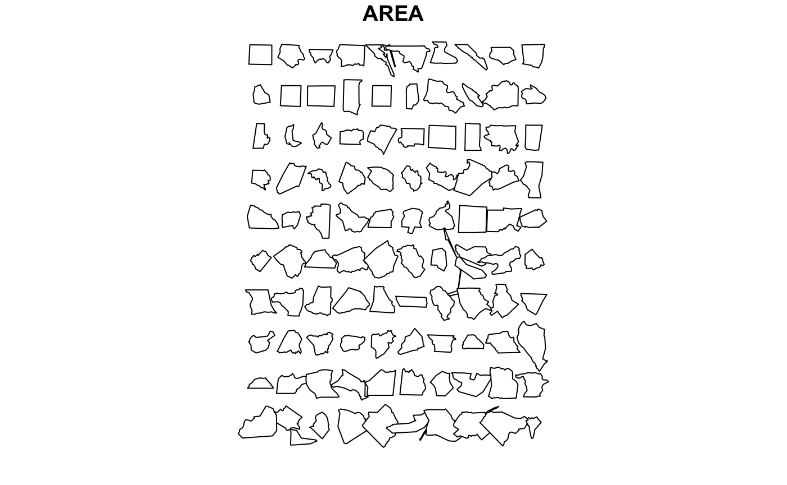
The regular grid algorithm has some customizations:
margin, y.mar, x.mar - These can be changed to adjust the margins between features. Note y.mar and x.mar are multiplied by margin to provide the individual x and y margin spacing. To override y.mar and x.mar manually, you must ensure margin=1. The values are in multiples of the bounding box heights or widths respectively. On the second version here, the x.margins are exaggerated which stretches out the distribution horizontally. Absolute dimensions of individual features in the dataset are preserved in both.par(mar=c(0,0,0,0))
plot(distribute(nc_aligned, margin=1.5))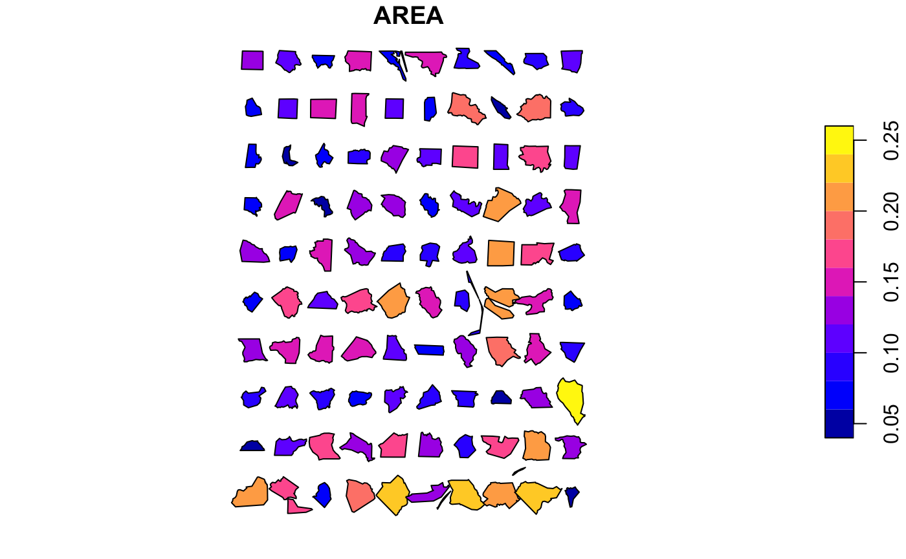
plot(distribute(nc_aligned, margin=1, x.mar=2))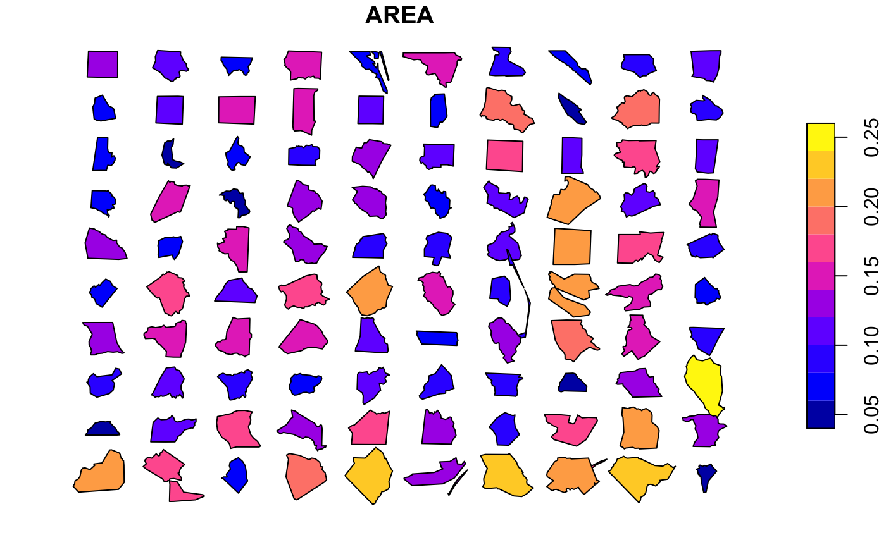
scale - Used to adjust the scale of features (note that this directly affects the spatial dimensions of features, within the notional coordinate system, so this should be treated with caution).par(mar=c(0,0,0,0))
plot(distribute(nc_aligned, scale=0.3))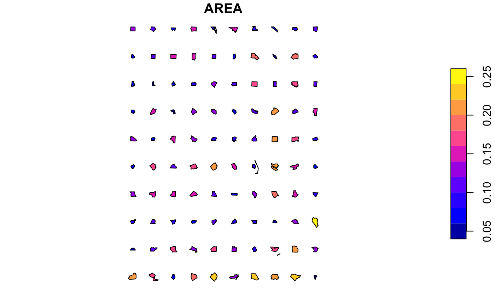
max.features, cols / rows, dir - These control the dimensions of the grid; max.features is set to 200 by default; the function will only distribute a maximum of these features, or the actual number of features, whichever is less. By default, the direction of the distribution is left-to-right then top-to-bottom (dir="v") and the square root of the features to distribute is used to count the number of columns; the number of columns can be manually adjust using cols. Alternatively, the direction of distribution can be top-to-bottom then left-to-right (dir="h"), in which case rows can be used to manually adjust the number of rows.par(mar=c(0,0,0,0))
plot(distribute(nc_aligned, dir="h", rows=10))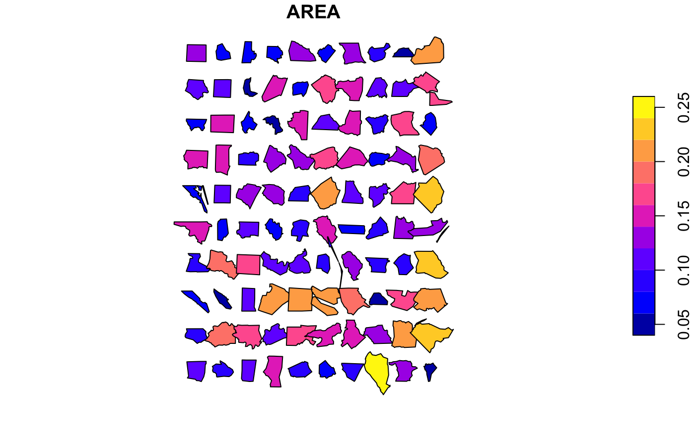
Often it is useful to sort the features by some attribute. This is best done before passing to distribute(). For example to order these county shapes by total area, we simply use a normal order() selection, and here just distribute the first twenty of them. Naturally they can also be coloured by the same or different parameters.
par(mar=c(0,0,0,0))
plot(distribute(nc_aligned[rev(order(nc_aligned$AREA)),], max.features=20, margin=2),
col = sf.colors(20), border = 'grey')
#> Warning in distribute(nc_aligned[rev(order(nc_aligned$AREA)), ],
#> max.features = 20, : There are more features than the value of
#> max.features; only the first 20 features will be distributed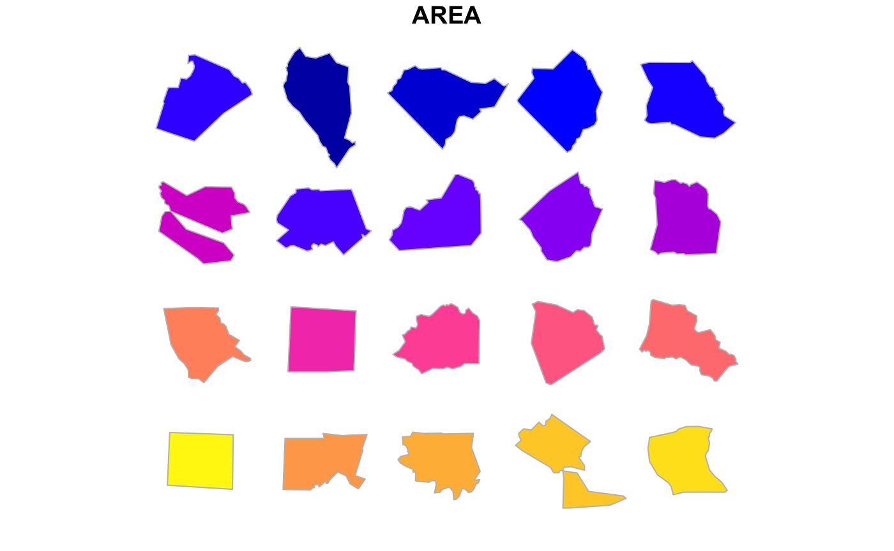
And probably we want to label the features, otherwise it may be difficult to identify them. Here we can call up the names of the counties and label them with text.
par(mar=c(0,0,0,0))
nc_n2 <- align(nc_original,by.feature=T)
#> Warning in align(nc_original, by.feature = T): Supplied sf object uses lat/
#> long values, hence converted to Mercator; centroids may not be satisfactory
distr_nc <- distribute(nc_n2[rev(order(nc_n2$AREA)),], max.features=20, margin=2)
#> Warning in distribute(nc_n2[rev(order(nc_n2$AREA)), ], max.features = 20, :
#> There are more features than the value of max.features; only the first 20
#> features will be distributed
# Just plot
plot(st_geometry(distr_nc), col = sf.colors(20, categorical = TRUE), border = 'grey')
# Plot labels based on centroids
#points(st_coordinates(st_centroid(st_geometry(distr_nc))))
text(st_coordinates(st_centroid(st_geometry(distr_nc))),labels=distr_nc$NAME,cex=0.5)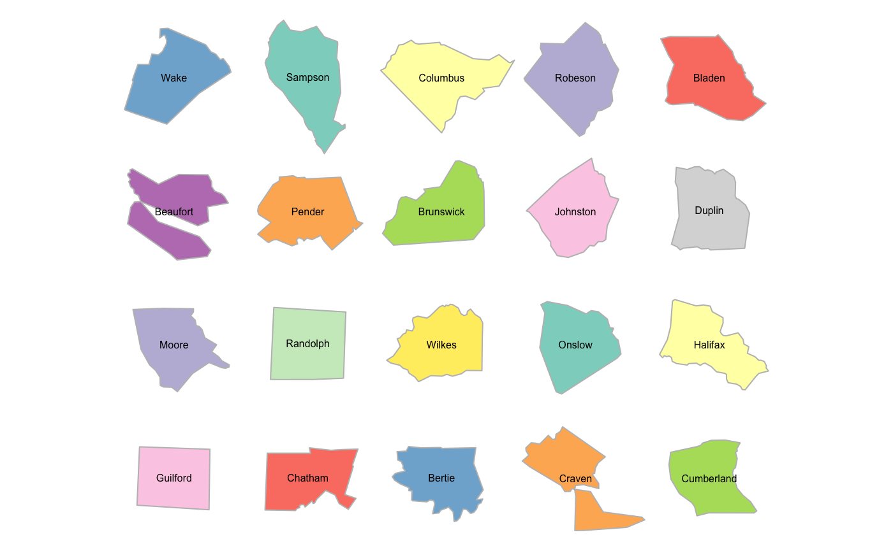
Warning: the distribute function assumes that the input features have been normalized and treats each feature as a separate item. Don’t mix them up, otherwise you’ll get some really weird plots!…
par(mar=c(0,0,0,0))
plot(st_geometry(distribute(nc_aligned_combined)), col = sf.colors(20, categorical = TRUE), border = 'grey')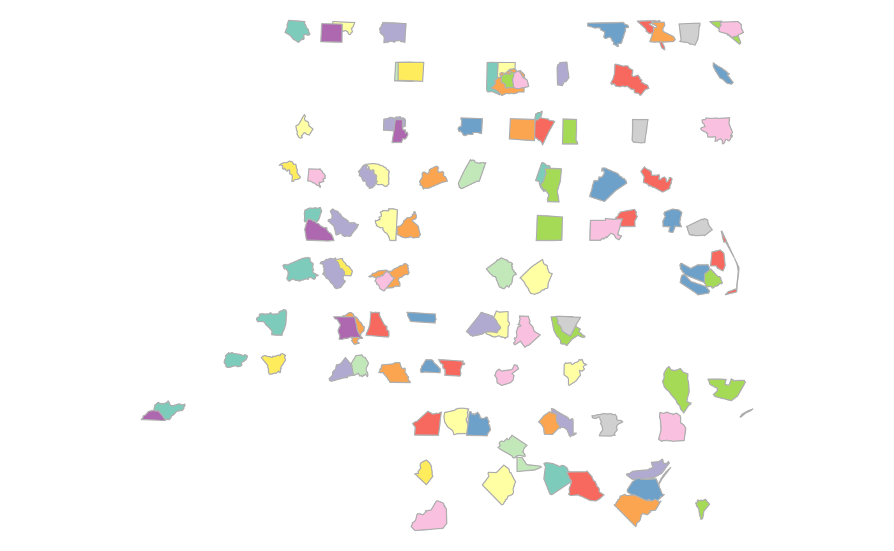
Naturally, the resulting sf objects or the plot can be exported as external files, or as PDFs, as below:-
# Export as shapefile (without CRS)
st_write(distr_nc, "export.shp")
# Export PDF of plot for manual tweaking in other apps
pdf(file ="export.pdf", width=10, height=10)
par(mar=c(0,0,0,0))
nc_n2 <- align(nc_original,by.feature=T)
distr_nc <- distribute(nc_n2[rev(order(nc_n2$AREA)),], max.features=100, margin=1.8)
plot(st_geometry(distr_nc), col = sf.colors(20, categorical = TRUE), border = 'grey')
text(st_coordinates(st_centroid(st_geometry(distr_nc))),labels=distr_nc$NAME,cex=0.5)
dev.off()